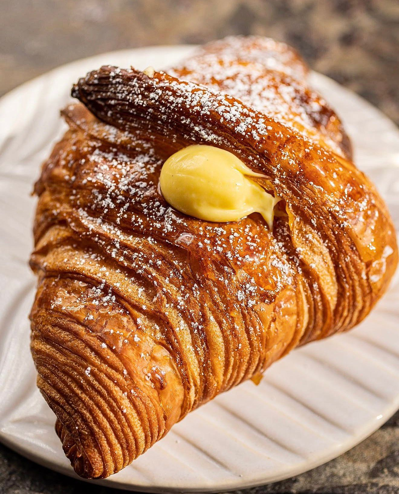

A Sacred Space
The legacy of this corner.
For decades, neighbours and friends, foodies and yogis, young and old, have come to this historic site in Del Mar to share a cup of coffee and a conversation. Our team included.
Our dream is to continue the legacy of this sacred space that has become such an important part of the fabric of Del Mar.